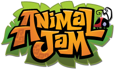

click to go back home
i love animal jam - welcome to tha shrine!!
What is this?
Welcome to my Animal Jam shrine! This is my fan-page for the internet webgame Animal Jam.
The owner of this site's username is Darthawesome2! Feel free to friend me. I play both AJPC and AJPW.